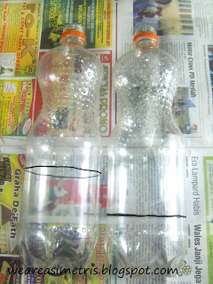

Punya botol plastik bekas? Heey, jangan dibuang dulu dong. Sekarang botol plastik bekas kalian bisa disulap jadi dompet atau tempat pensil imut. Nggak percaya? Simak nih, tutorial berikut.
Bahan yang perlu disiapkan, antara lain:
- 2 botol plastik ukuran 1.5 liter, 1 liter, atau 660 ml (tergantung keinginan dan kebutuhan).
- Cutter dan gunting.
- Spidol besar.
- Resleting berwarna, ukuran 30 - 40 cm.
- Lem tembak atau lem UHU.
- Cat.
- Hiasan .
Cara pembuatannya :
- beri tanda atau pola menggunakan spidol hitam pada badan botol
- kemudian potong botol sesuai pola menggunakan cutter dan rapikan dengan gunting [hati-hati ya menggunakannya]
- Botol yang sudah dipotong bisa dicat sesuai selera, tidak dicat juga tidak masalah,.
- lem resleting pada bagian luar botol, dari arah pangkal resleting. Lem dulu bagian bawah sampai seperempat area,, bila sudah, lem bagian atas sampai menutup seluruh tepi botol, untuk diperhatikan ya, ketika mengelem, jangan sampai rel resleting ikut kena lem, jadi beri jarak rel resleting dengan tepi botol.
- bila seluruh tepi sudah tertutup resleting, pasti akan menyisakan ujung resleting beberapa centi,, sisa itu bisa dipotong atau dibentuk-bentuk sebagai hiasan,,
- setelah selesai pembuatan, dompet ataupun tepak, dapat dihiasi sesuai selera.
Bila ingin membuat dompet, sebaiknya ukuran botol sama-sama pendek, untuk tempat pensil, sebaiknya salah satu berukuran lebih panjang dari yang lain seperti pada gambar diatas. Ukuran panjang untuk bagian bawah, sedang yang pendek untuk tutupnya,


Sumber: